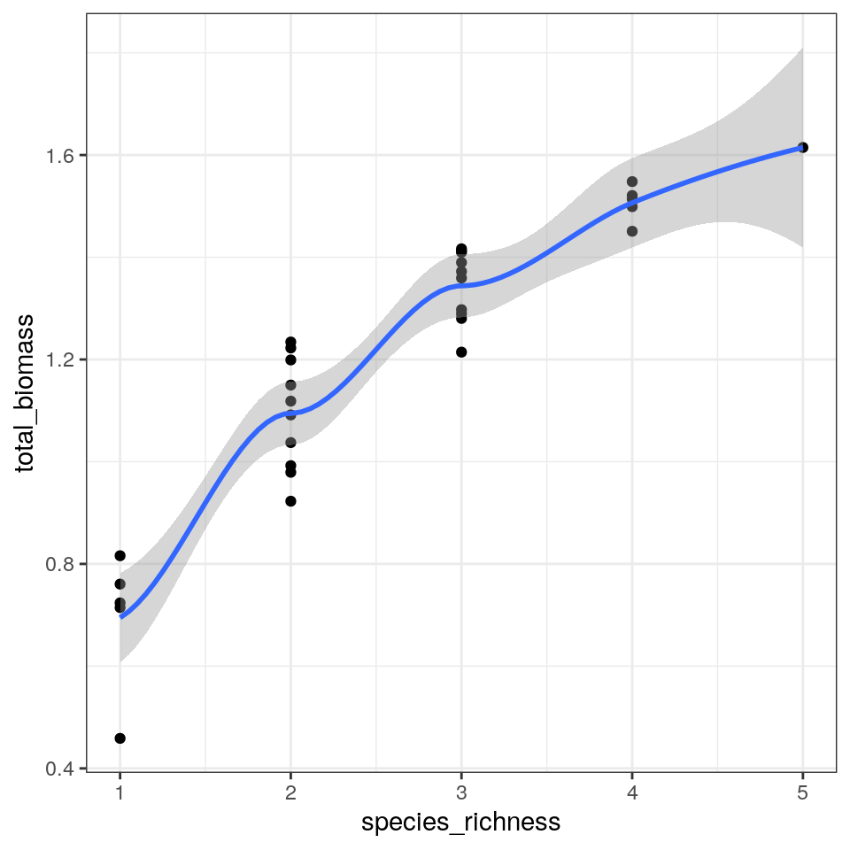
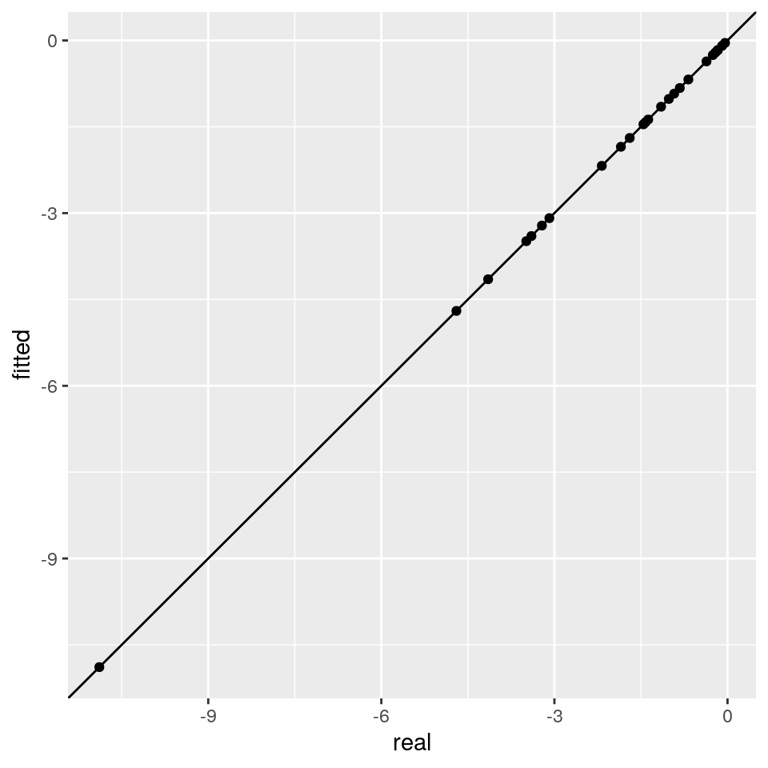
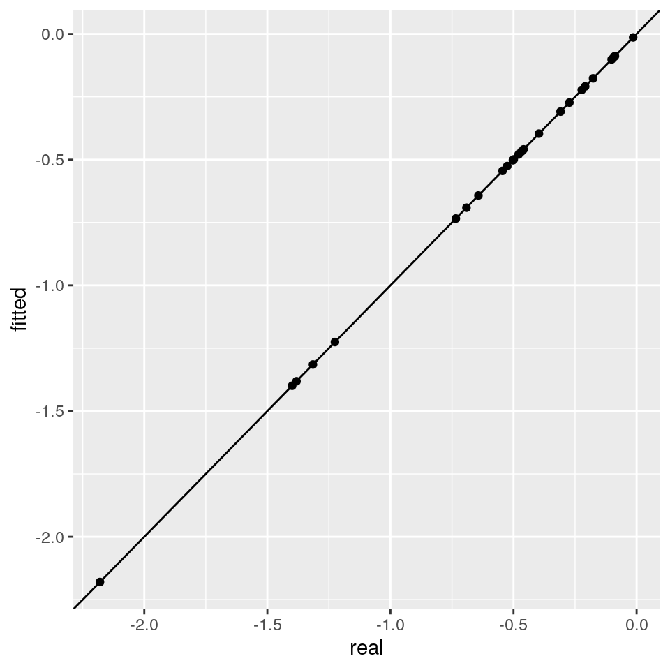
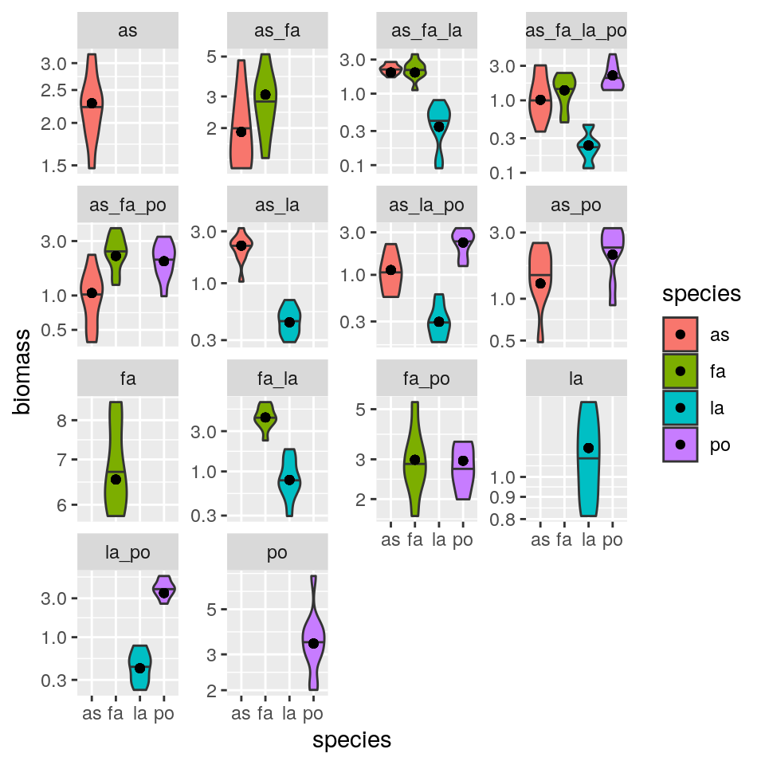
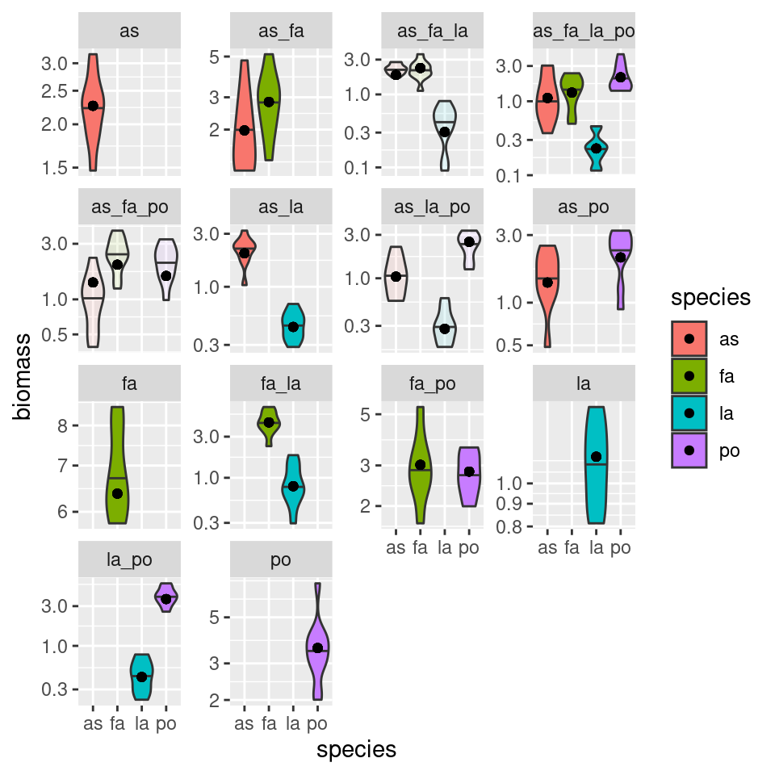
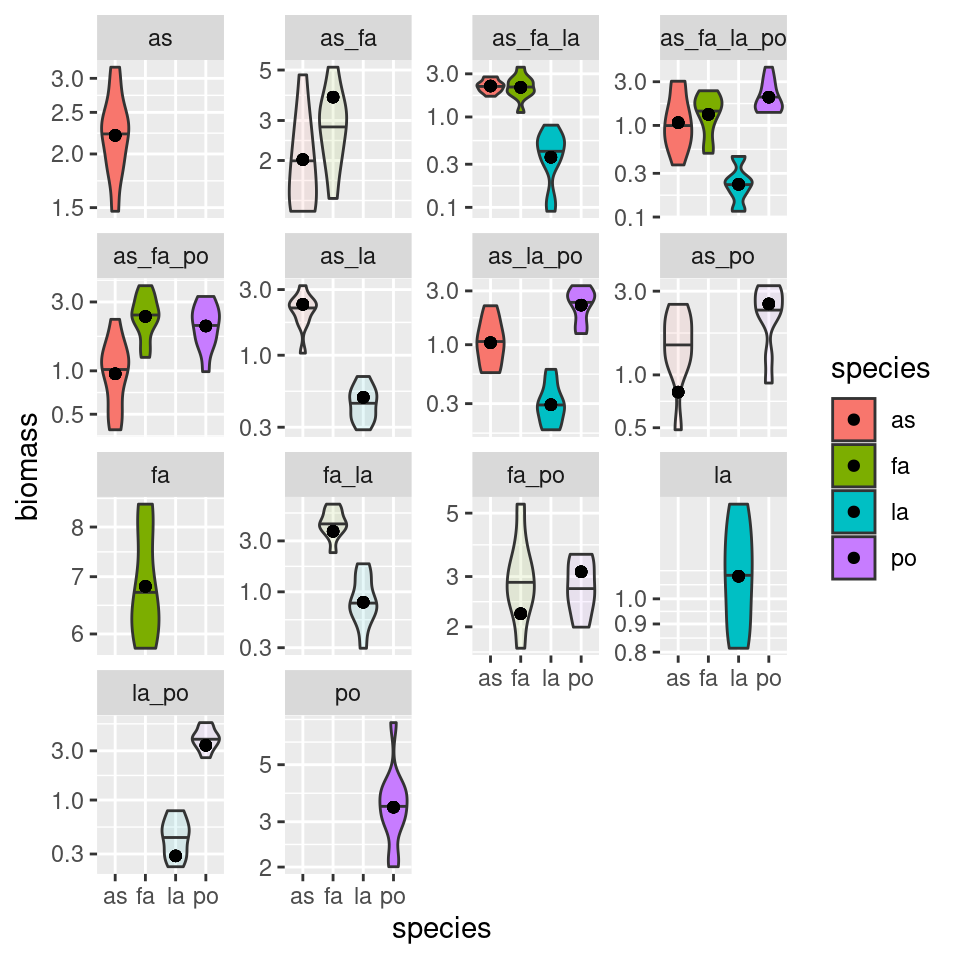
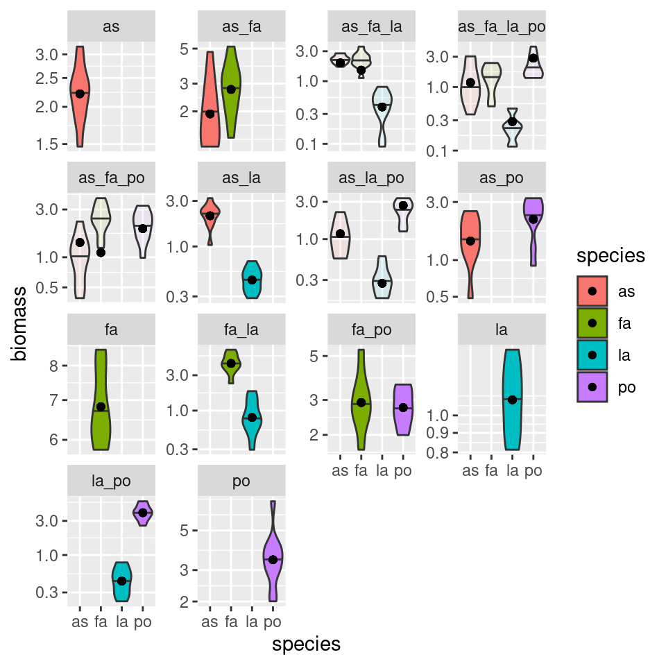

Lecture 6 Predicting coexistence in ecological communities
Lesson plan:
- We consider the problem of co-culturing several species taken from a pool in all possible combinations.
- This type of experiments has been conducted to test hypotheses on the relationship between diversity and ecosystem functioning.
- The number of combinations grows quickly with the size of the pool, making experiments difficult.
- The difficulty is compounded by the fact that not all combinations are expected to lead to coexistence.
- We parameterize a simple statistical model, and draw a connection with GLV dynamics.
- We test whether our model is able to predict the outcomes of experiments out-of-fit.
6.1 Background: Diversity and Ecosystem Functioning
Key paper: Tilman et al. (2001)
This paper present the results of the biodiversity-ecosystem functioning experiments carried out at Cedar Creek, Minnesota, by Tilman and collaborators. These multi-year experiments are among the largest ever carried out in ecology, and have been hugely influential. The same type of experiments have been carried out with different organisms, in the lab, and in mesocosms.
Ecologists have performed large experiments in which different assemblages of species are co-cultured. These experiments have been conducted with plants (for example, Biodiversity Ecosystem Functioning experiments e.g., Hector et al. (1999) Tilman et al. (2001), Cadotte (2013)) and in the laboratory using protozoan, algae or bacteria. Two commonly-encountered problems in this type of experiments have to to with the scaling of the number of experiments with the number of species, and with the probability of coexistence.
Scale: How many communities can we form from a pool of \(n\) species? We can culture a single species in isolation (\(n\) possibilities), two species in pair (\(n(n-1) / 2\) possibilities), and so on. The total is therefore:
\[ \sum_{j=1}^n \binom{n}{j} = 2^n -1 \]
And this is only considering the presence/absence of each species! Moreover, we might want to vary the initial conditions (e.g., starting two species at low/high abundance, equal abundance, high/low abundace), etc. Clearly, this makes trying all possible combinations unfeasible when \(n\) is large enough. For example, for 10 species we can form 1023 assemblages, while with 20 more than a million!
Coexistence: even if we could try all possible experiments, many assemblages would collapse to smaller communities because of extinctions. For example, pairs could become monocultures, triplets become pairs or monocultures, etc. As such, even if we were to try all possible combinations, we would end up observing a smaller set of “final communities”.
To guide experimentation, we need a way to be able to predict the (probable) outcome of experiments without having to run them all. Here we attempt to do so by examining a handful of experimental results, and using these data to parametrize a statistical model. The model provides a way to navigate the enormous space of possibilities, thereby suggesting “good” experiments that yield a large probability of coexistence.
6.2 Synthetic communities using the GLV model
To set the stage for deriving a statistical model that can deal with the problems above, we start by simulating the communities that can be formed from a pool of \(n\) species using the GLV model. First, we need a way to index our communities. As done before, we take a vector \(p\) reporting the presence/absence of a given species in a community. To this end, we associate a label \(k \in \{1, \ldots, 2^n -1\}\) with each possible community. If only taxon 1 is present (\(p = [1,0,0,\ldots,0]\)), then \(k = 1\), if only taxon 2 is present (\(p =[0,1,0,\ldots,0]\)) then \(k = 2\), if both taxa 1 and 2 are part of the community, \(k = 3\) (\(p = [1,1,0,\ldots,0]\)); in general, \(k = \sum_{i = 1}^n p_i 2^{(i-1)}\) where \(p_i = 1\) if taxon \(i\) is in the community, and \(p_i = 0\) otherwise.
We can then cycle through each of the \(2^n - 1\) assemblages that can be formed, and determine whether the species will coexist or not in our experiment. For simplicity, we report as coexisting any set of species for which a) the GLV equilibrium is feasible, and b) it is locally stable. We collect all the communities that are coexisting along with the abundance of all species in the matrix \(E\).
In R:
set.seed(18) # this gives enough endpoints, but only 25
# take a random matrix of interactions:
# -Aij <- U[0,1]; -Aii <- Sqrt(2) + U[0,1]
# all interactions are competitive
n <- 5
A <- -matrix(runif(n * n), n, n)
diag(A) <- diag(A) - sqrt(2)
# choose positive growth rates
r <- runif(n) Now go through all possible combinations:
E <- matrix(0, 0, n) # matrix containing all communities
x_template <- rep(0, n) # template for row of E
for (k in 1:(2^n - 1)){
p <- as.integer(intToBits(k)[1:n]) # from index to presence/absence
presence <- p > 0
A_k <- A[presence, presence, drop = FALSE]
r_k <- r[presence]
# check if equilibrium is feasible
x_k_star <- solve(A_k, -r_k)
if (all(x_k_star > 0)){
# check if equilibrium is locally stable
# a) build community matrix
M <- x_k_star * A_k
# b) compute eigenvalues
eM <- eigen(M, only.values = TRUE)$values
# c) check stability
if (all(Re(eM) < 0)){
# we have a feasible, stable equilibrium
# add to the set
tmp <- x_template
tmp[presence] <- x_k_star
E <- rbind(E, tmp)
}
}
}
rownames(E) <- NULL
knitr::kable(
as.data.frame(E)
)| V1 | V2 | V3 | V4 | V5 |
|---|---|---|---|---|
| 0.3108937 | 0.0000000 | 0.0000000 | 0.0000000 | 0.0000000 |
| 0.0000000 | 0.2867824 | 0.0000000 | 0.0000000 | 0.0000000 |
| 0.2639193 | 0.1827668 | 0.0000000 | 0.0000000 | 0.0000000 |
| 0.0000000 | 0.0000000 | 0.2942741 | 0.0000000 | 0.0000000 |
| 0.2774446 | 0.0000000 | 0.1163966 | 0.0000000 | 0.0000000 |
| 0.0000000 | 0.1908581 | 0.2296115 | 0.0000000 | 0.0000000 |
| 0.2472075 | 0.1544949 | 0.0834396 | 0.0000000 | 0.0000000 |
| 0.0000000 | 0.0000000 | 0.0000000 | 0.0918489 | 0.0000000 |
| 0.3065534 | 0.0000000 | 0.0000000 | 0.0816078 | 0.0000000 |
| 0.0000000 | 0.2723576 | 0.0000000 | 0.0494694 | 0.0000000 |
| 0.2653049 | 0.1655336 | 0.0000000 | 0.0572284 | 0.0000000 |
| 0.0000000 | 0.0000000 | 0.2928056 | 0.0536094 | 0.0000000 |
| 0.2736989 | 0.0000000 | 0.1169508 | 0.0674319 | 0.0000000 |
| 0.0000000 | 0.1799253 | 0.2323978 | 0.0335017 | 0.0000000 |
| 0.2476419 | 0.1378836 | 0.0873999 | 0.0507067 | 0.0000000 |
| 0.0000000 | 0.0000000 | 0.0000000 | 0.0000000 | 0.2128200 |
| 0.3082106 | 0.0000000 | 0.0000000 | 0.0000000 | 0.2018726 |
| 0.0000000 | 0.2741596 | 0.0000000 | 0.0000000 | 0.1732541 |
| 0.2650016 | 0.1693007 | 0.0000000 | 0.0000000 | 0.1789743 |
| 0.0000000 | 0.0000000 | 0.2777917 | 0.0000000 | 0.0303189 |
| 0.0000000 | 0.2006966 | 0.1965126 | 0.0000000 | 0.0547530 |
| 0.0000000 | 0.0000000 | 0.0000000 | 0.0109366 | 0.2123335 |
| 0.3079627 | 0.0000000 | 0.0000000 | 0.0047112 | 0.2016718 |
| 0.0000000 | 0.0000000 | 0.2775681 | 0.0447484 | 0.0284754 |
| 0.0000000 | 0.1955419 | 0.1985247 | 0.0151074 | 0.0535030 |
6.3 Total biomass
Our simulated communties have much in common with BEF experiments. For example, plotting the species richness on the x-axis and the total biomass on the y-axis, we recover the typical pattern found in real experiments (Hector et al. (1999), Tilman et al. (2001), Cadotte (2013)):
library(tidyverse) # plotting and wrangling
total_biomass <- rowSums(E)
species_richness <- rowSums(E > 0)
BEF <- tibble(species_richness = species_richness, total_biomass = total_biomass)
ggplot(data = BEF) +
aes(x = species_richness, y = total_biomass) +
geom_point() + geom_smooth() + my_theme
showing a modest increase in total biomass with increasing species richness.
6.4 Hyperplanes
We can rewrite the GLV model as:
\[ \begin{aligned} \dfrac{dx(t)}{dt} &= D(x(t))(r + A x(t))\\ &= D(r) D(x(t))(1 + B x(t)) \end{aligned} \] where we have \(b_{ij} = a_{ij} / r_i\). The equilibrium for each subset of species \(k\) (if it exists) can be found as
\[x^{(k)\star}= -(B^{(k)})^{-1} 1^{(k)}\]
where \((B^{(k)})^{-1}\) is the inverse of the \(B^{(k)}\) sub-matrix of \(B\) in which only the rows/columns belonging to \(k\) are retained, and \(1^{(k)}\) is a vector of ones with length equal to the number of species in \(k\).
We now want to link the matrix \(B\) with the results of the experiments, stored in matrix \(E\). Call \(x^{(k)}_i\) the recorded density of taxon \(i\) in community \(k\) (i.e., stored in one of the rows of \(E\)). We know that, whenever a feasible equilibrium exist,
\[ (B^{(k)}) x^{(k)}= -1^{(k)} \] which can be seen as a system of as many equations as there are species in \(k\). Then, we can build a matrix \(P\) where each row represents an equation of form:
\[ \sum_{j \in k} b_{ij} x_j^{(k)} = -1 \]
and we have a column for each coefficient in \(B\). For example, take three taxa, and suppose that we can culture each in isolation, and that the all assemblages coexist when co-cultured. We can write 12 equations: monocultures (\(k \in \{1, 2, 4\}\)) give rise to a single equation; co-cultures of two taxa to two equations each (\(k \in \{3, 5, 6 \}\)); and communities with three taxa to three independent equations (\(k = 7\)). Here are the 12 equations we can write:
\[ \begin{aligned} b_{11} x_1^{(1)} &= -1\\ b_{22} x_2^{(2)} &= -1\\ b_{11} x_1^{(3)} + b_{12}x_2^{(3)} &= -1\\ b_{21} x_1^{(3)} + b_{22}x_2^{(3)} &= -1\\ b_{33} x_3^{(4)} &= -1\\ b_{11} x_1^{(5)} + b_{13} x_3^{(5)} &= -1\\ b_{31} x_1^{(5)} + b_{33} x_3^{(5)} &= -1\\ b_{22} x_2^{(6)} + b_{23} x_3^{(6)} &= -1\\ b_{32} x_2^{(6)} + b_{33} x_3^{(6)} &= -1\\ b_{11} x_1^{(7)} + b_{12} x_2^{(7)} + b_{13} x_3^{(7)} & = -1\\ b_{21} x_1^{(7)} + b_{22} x_2^{(7)} + b_{23} x_3^{(7)} & = -1\\ b_{31} x_1^{(7)} + b_{32} x_2^{(7)} + b_{33} x_3^{(7)} & = -1 \end{aligned} \]
We can summarize the equations in a more compact form as \(P v(B) = - 1\):
\[ \begin{pmatrix} x_1^{(1)} & 0 & 0 & 0 & 0 & 0 & 0 & 0 & 0 \\ 0 & 0 & 0 & 0 & x_2^{(2)} & 0 & 0 & 0 & 0 \\ x_1^{(3)} & x_2^{(3)} & 0 & 0 & 0 & 0 & 0 & 0 & 0 \\ 0 & 0 & 0 & x_1^{(3)} & x_2^{(3)} & 0 & 0 & 0 & 0 \\ 0 & 0 & 0 & 0 & 0 & 0 & 0 & 0 & x_3^{(4)} \\ x_1^{(5)} & 0 & x_3^{(5)} & 0 & 0 & 0 & 0 & 0 & 0 \\ 0 & 0 & 0 & 0 & 0 & 0 & x_1^{(5)} & 0 & x_3^{(5)} \\ 0 & 0 & 0 & 0 & x_2^{(6)} & x_3^{(6)} & 0 & 0 & 0 \\ 0 & 0 & 0 & 0 & 0 & 0 & 0 & x_2^{(6)} & x_3^{(6)}\\ x_1^{(7)} & x_2^{(7)} & x_3^{(7)} & 0 & 0 & 0 & 0 & 0 & 0 \\ 0 & 0 & 0 & x_1^{(7)} & x_2^{(7)} & x_3^{(7)} & 0 & 0 & 0 \\ 0 & 0 & 0 & 0 & 0 & 0 & x_1^{(7)} & x_2^{(7)} & x_3^{(7)} \end{pmatrix} \begin{pmatrix} b_{11}\\ b_{12}\\ b_{13}\\ b_{21}\\ b_{22}\\ b_{23}\\ b_{31}\\ b_{32}\\ b_{33} \end{pmatrix} = - \begin{pmatrix} 1\\ 1\\ 1\\ 1\\ 1\\ 1\\ 1\\ 1\\ 1\\ 1\\ 1\\ 1 \end{pmatrix} \]
where \(v(B)\) is a vectorized version of \(B\). Because we have \(n 2^{n-1} = 12\) equations, and \(n^2 = 9\) variables, in principle the system can be solved.
Moore-Penrose pseudoinverses
For a \(n \times n\) matrix \(A\), the inverse is determined (when it exists), as a matrix \(A^{-1}\) such that \(AA^{-1} = A^{-1}A = I\). A square matrix is invertible if its determinant (remember, the product of its eigenvalues) is nonzero. A matrix with determinant zero is called singular or degenerate and has no inverse. Singular matrices are rare, in the sense that a random matrix is “almost never” singular (this can be stated in a precise mathematical way). An invertible matrix has full rank (i.e., the rows [columns] are all linearly independent).
Can we find a matrix that “works like” an inverse when \(A\) is singular (or not square)? Turns out, we can find a matrix \(A^+\) that satisfies these four criteria:
\[ AA^+A = A \] \[ A^+AA^+ = A^+ \]
\[AA^+ = (AA^+)^T\] \[A^+A = (A^+A)^T\]
Suppose that \(A\) has linearly independent columns (i.e., it is of full column rank), then \(A^T A\) has full rank and is therefore invertible. In this case, we can compute the left pseudoinverse as
\[A^+ = (A^T A)^{-1}A^T\]
This is called the left inverse because \(A^+A= (A^T A)^{-1} A^T A=I\). When \(A\) has independent rows, one can compute the right inverse. Note that a generalized inverse \(A^+\) exists even if \(A\) is not of full column nor full row rank, but in this case it is not unique.
Application: least squares
The pseudo-inverse can be used to find the least-squares solution of a system of linear equations. For example, in linear regression, we want to model a set of \(n\) observations, \(y\), as a linear function of measured predictors \(X\) (for example, a matrix with \(n\) rows [one for each observation], and \(k\) columns [the number of measured predictors for each observation, typically with \(k \ll n\)]) and some parameters \(b\). The linear system
\[ Xb = y \]
has no solution (for example, because \(X\) is rectangular). If \(X\) were to be invertible, finding the parameters would be easy:
\[ \hat{b} = X^{-1}y \]
we can attempt the same approach using the pseudo-inverse:
\[ \hat{b} = X^{+}y \]
in particular, it can be proven that the solution \(\hat{b}\) minimizes the SSQ: call \(\hat{y} = X \hat{b}\), then the solution \(\hat{b}\) is the parameter choice minimizing \(SSQ = \sum_i (y_i -\hat{y}_i)^2\).
One can recognize the equation above as a linear regression, and choose \(\widehat{v(B)} = -P^{+}1\) (where \(P^{+}\) is the Moore-Penrose pseudo-inverse of \(P\)). Before doing that, however, we can try to simplify the calculation by rearranging the rows of \(P\):
\[ \begin{pmatrix} x_1^{(1)} & 0 & 0 & 0 & 0 & 0 & 0 & 0 & 0 \\ x_1^{(3)} & x_2^{(3)} & 0 & 0 & 0 & 0 & 0 & 0 & 0 \\ x_1^{(5)} & 0 & x_3^{(5)} & 0 & 0 & 0 & 0 & 0 & 0 \\ x_1^{(7)} & x_2^{(7)} & x_3^{(7)} & 0 & 0 & 0 & 0 & 0 & 0 \\ 0 & 0 & 0 & 0 & x_2^{(2)} & 0 & 0 & 0 & 0 \\ 0 & 0 & 0 & x_1^{(3)} & x_2^{(3)} & 0 & 0 & 0 & 0 \\ 0 & 0 & 0 & 0 & x_2^{(6)} & x_3^{(6)} & 0 & 0 & 0 \\ 0 & 0 & 0 & x_1^{(7)} & x_2^{(7)} & x_3^{(7)} & 0 & 0 & 0 \\ 0 & 0 & 0 & 0 & 0 & 0 & 0 & 0 & x_3^{(4)} \\ 0 & 0 & 0 & 0 & 0 & 0 & x_1^{(5)} & 0 & x_3^{(5)} \\ 0 & 0 & 0 & 0 & 0 & 0 & 0 & x_2^{(6)} & x_3^{(6)}\\ 0 & 0 & 0 & 0 & 0 & 0 & x_1^{(7)} & x_2^{(7)} & x_3^{(7)} \end{pmatrix} \begin{pmatrix} b_{11}\\ b_{12}\\ b_{13}\\ b_{21}\\ b_{22}\\ b_{23}\\ b_{31}\\ b_{32}\\ b_{33} \end{pmatrix} = - \begin{pmatrix} 1\\ 1\\ 1\\ 1\\ 1\\ 1\\ 1\\ 1\\ 1\\ 1\\ 1\\ 1 \end{pmatrix} \]
Showing that the matrix \(P\) is block-diagonal, with blocks \(P_i = E_i\), where \(E_i\) is the matrix \(E\) in which only the rows in which species \(i\) is present are retained. As such, we can solve for the matrix \(B\) one row at a time:
\[ \begin{pmatrix} x_1^{(1)} & 0 & 0 \\ x_1^{(3)} & x_2^{(3)} & 0 \\ x_1^{(5)} & 0 & x_3^{(5)} \\ x_1^{(7)} & x_2^{(7)} & x_3^{(7)} \end{pmatrix} \begin{pmatrix} b_{11}\\ b_{12}\\ b_{13} \end{pmatrix} = - \begin{pmatrix} 1\\ 1\\ 1\\ 1 \end{pmatrix} \]
For example:
# rescaled matrix
B <- 1 / r * A
# now try to recover B from matrix E
fitted_B <- matrix(0, n, n)
for (i in 1:n){
# take the matrix Ei
Ei <- E[E[,i] > 0, , drop = FALSE]
# solve for the row (MASS::ginv computes the pseudoinverse)
fitted_B[i,] <- -rowSums(MASS::ginv(Ei))
}
ggplot(data = tibble(real = as.vector(B),
fitted = as.vector(fitted_B))) +
aes(x = real, y = fitted) + geom_point() +
geom_abline(slope = 1, intercept = 0)
Notice that in general the system of equations is over-determined. As such, we can fit using a subset of the experiments, and then predict the rest of the experiments out-of-fit. For example, let’s fit again using the information on monocultures and pairs only, and then predict experiment 25, in which all species but the first coexist:
E_partial <- E[rowSums(E> 0) < 3, ]
fitted_B <- matrix(0, n, n)
for (i in 1:n){
# take the matrix Ei
Ei <- E_partial[E_partial[,i] > 0, , drop = FALSE]
# solve for the row
fitted_B[i,] <- -rowSums(MASS::ginv(Ei))
}
ggplot(data = tibble(real = as.vector(B),
fitted = as.vector(fitted_B))) +
aes(x = real, y = fitted) + geom_point() +
geom_abline(slope = 1, intercept = 0)
[1] “predicted”
[1] 0.00000000 0.19554192 0.19852465 0.01510744 0.05350303
[1] “observed”
[1] 0.00000000 0.19554192 0.19852465 0.01510744 0.05350303
The equation \(E_i B_i = -1\) shows that all the equilibria of species \(i\) in a GLV system are arranged on a hyperplane.
Homework 6a
As seen above, for GLV, the matrix \(B = D(r)^{-1}A\) encodes all the equilibria (feasible or unfeasible) for the model. Knowing \(B\) is therefore all we need to determine the existence of a feasible equilibrium for any community we can form from the pool.
Does the matrix \(B\) informs us on invasibility? Take a sub-community \(k\) resting at its feasible equilibrium point. Can one determine whether a species \(i \notin k\) can invade when rare by inspecting the matrix \(B\)?
When can the matrix \(B\) be used to determine the stability of the feasible equilibrium for a subset \(k\)?
6.5 Fitting real data
Having played with synthetic data, we can start thinking about data stemming from real experiments. In particular, consider the linear, additive model:
\[ x_i^{(k)} = \gamma_i + \sum_{j\neq i} \theta_{ij} x_j^{(k)} \]
where \(x_i^{(k)}\) is the density of species \(i\) in community \(k\), \(\gamma_i\) models the density of \(i\) when grown in isolation, and the parameters \(\theta_{ij}\) model how the density of \(i\) is influenced by the other species in community \(k\). Dividing both sides by \(\gamma_i\) and rearranging:
\[ \sum_{j\neq i} (\theta_{ij} /\gamma_i) x_j^{(k)} - (1/{\gamma_i}) x_i^{(k)} = \sum_j b_{ij} x_j^{(k)} = -1 \] where we have definied \(b_{ij} = \theta_{ij} / \gamma_i\) for \(i \neq j\), and \(b_{ii} = - 1 / \gamma_i\). Note that this is exactly the same system of equations found above. As such, fitting a linear, addittive model for the biomass of each species in each plot is equivalent to finding the equilibrium strcuture of a GLV model that approximates the data.
One thing to consider when modeling real data, contrary to simulated data, is the structure of the errors. For example, empirical data often contain replicates that reach slightly different densities (while this is impossible in GLV). Furthermore, we need to link the rows of matrix \(P\) above, because when we make an error in measuring \(x_j^{(k)}\), the value is reported over several values. Following Maynard et al. (2020), we do the following:
- Propose a matrix \(B\)
- Compute the predicted abundance for all species in all observed assemblages (call them \(\tilde{x}_j^{(k)}\))
- Compute the SSQ: \(\sum_{j, k} (x_j^{(k)} - \tilde{x}_j^{(k)})^2\)
- Search numerically for the matrix \(B\) minimizing the SSQ
# constant to penalize solutions with negative
# abundances
penalization <- 1000
# main fitting function
# input:
# - matrix E as above (the data)
# - proposed matrix B
# output:
# - predicted matrix \tilde{E}
# - SSQ
compute_SSQ <- function(B, E){
tildeE <- E
ones <- rep(1, ncol(B)) # vector of 1s
for (i in 1:nrow(E)){
presence <- E[i, ] > 0
predicted_x <- rep(-1, sum(presence))
# use internal calls to speed up calculation
try({predicted_x <- .Internal(La_solve(B[presence, presence, drop = FALSE],
ones[presence],
10^-6))},silent = TRUE)
tildeE[i, presence] <- predicted_x
}
# now compute SSQ
observed <- E[E > 0]
# penalize negatives
predicted <- tildeE[E > 0]
predicted[predicted < 0] <- penalization
return(list(B = B,
E = E,
tildeE = tildeE,
SSQ = sum((predicted - observed)^2)
))
}
# for numerical minimization
to_minimize <- function(b, E){
n <- ncol(E)
return(compute_SSQ(
matrix(b, n, n),
E
)$SSQ)
}To test this method, we are going to use the data from Kuebbing et al. (2015), who co-cultured four species of plant in 14 out of 15 possible combinations. Let’s load the data
library(tidyverse)
url <- "https://github.com/dsmaynard/endpoints/raw/master/data/Kuebbing_plants/natives.csv"
E <- as.matrix(read_csv(url))
knitr::kable(
head(E)
)| as | fa | la | po |
|---|---|---|---|
| 1.4711 | 0 | 0 | 0 |
| 1.7968 | 0 | 0 | 0 |
| 1.8993 | 0 | 0 | 0 |
| 2.0634 | 0 | 0 | 0 |
| 2.2665 | 0 | 0 | 0 |
| 2.3062 | 0 | 0 | 0 |
| as | fa | la | po | |
|---|---|---|---|---|
| [135,] | 1.1219 | 1.8011 | 0.2390 | 1.4065 |
| [136,] | 1.4751 | 1.3486 | 0.2474 | 1.5491 |
| [137,] | 0.6021 | 1.9389 | 0.1817 | 2.7487 |
| [138,] | 0.8973 | 1.6002 | 0.1156 | 3.2293 |
| [139,] | 3.0384 | 1.4442 | 0.4590 | 1.5490 |
| [140,] | 2.9240 | 2.3903 | 0.2379 | 4.3230 |
And let’s try to find a good numerical solution starting from the identity matrix:
set.seed(2)
B <- matrix(0, 4, 4)
diag(B) <- 1
tmp <- optim(par = as.vector(B),
fn = to_minimize,
E = E,
method = "BFGS")
best_B <- matrix(tmp$par, 4, 4)
solution <- compute_SSQ(best_B, E)Now let’s write code to show a nice plot of the predicted vs. observed values for all communities:
plot_solution <- function(solution, oof = NULL){
# add a column with community composition
spnames <- colnames(solution$E)
community <- apply(solution$E, 1, function(x) paste(spnames[x > 0], collapse = "_"))
# work with observed data
E <- as_tibble(solution$E) %>%
add_column(community = community) %>%
mutate(experiment = row_number())
toplot <- E %>% gather(species, observed_biomass, -experiment, -community) %>%
filter(observed_biomass > 0)
# now the predicted data
if (is.null(oof)){
tildeE <- as_tibble(solution$tildeE) %>%
add_column(community = community) %>%
gather(species, predicted_biomass, -community) %>%
distinct()
} else {
tildeE <- as_tibble(solution$tildeE) %>%
add_column(community = community, oof = oof) %>%
gather(species, predicted_biomass, -community, -oof) %>%
distinct()
}
# join the two data sets
toplot <- toplot %>%
inner_join(tildeE, by = c("community", "species")) %>%
filter(observed_biomass > 0)
if (is.null(oof)){
pl <- ggplot(data = toplot) +
aes(x = species, fill = species) +
geom_violin(aes(y = observed_biomass), draw_quantiles = 0.5, scale = "width") +
geom_point(aes(y = predicted_biomass)) +
facet_wrap(~community, scales = "free_y") +
scale_y_log10("biomass")
} else {
pl <- ggplot(data = toplot) +
aes(x = species, fill = species) +
geom_violin(aes(y = observed_biomass, alpha = I(1 - 0.9 * oof)),
draw_quantiles = 0.5, scale = "width") +
geom_point(aes(y = predicted_biomass)) +
facet_wrap(~community, scales = "free_y") +
scale_y_log10("biomass")
}
return(pl)
}
plot_solution(solution)
6.6 Predicting real data out of fit
Exactly as done for the GLV simulated data, we can attempt fitting the matrix \(B\) using only part of the experimental data, and then predict the rest out-of-fit. This is a powerful test to make sure that a) we have chosen a good structure for the statistical model, and b) we are not overfitting. For example, let’s try to predict all triplets out of fit. First, we fit the model using only the information about monocultures, pairs, and the quadruplet (11 experiments); then, we use the fitted matrix to predict all of the data and plot:
set.seed(1)
B <- matrix(0, 4, 4)
diag(B) <- 1
Enotriplets <- E[rowSums(E > 0) != 3, ]
oof <- rowSums(E > 0) == 3
tmp <- optim(par = as.vector(B),
fn = to_minimize,
E = Enotriplets,
method = "Nelder-Mead")
best_B_oof <- matrix(tmp$par, 4, 4)
solution_oof <- compute_SSQ(best_B_oof, E)
plot_solution(solution_oof, oof)
Repeat excluding all the pairs:
set.seed(1)
B <- matrix(0, 4, 4)
diag(B) <- 1
Enopairs <- E[rowSums(E > 0) != 2, ]
oof <- rowSums(E > 0) == 2
tmp <- optim(par = as.vector(B),
fn = to_minimize,
E = Enopairs,
method = "Nelder-Mead")
best_B_oof2 <- matrix(tmp$par, 4, 4)
solution_oof2 <- compute_SSQ(best_B_oof2, E)
plot_solution(solution_oof2, oof)
Of course, we might push this too far. For example, a popular way to attempt parameterizing models is to consider only monocultures and pairs:
set.seed(1)
B <- matrix(0, 4, 4)
diag(B) <- 1
Eonlymonopairs <- E[rowSums(E > 0) < 3, ]
oof <- rowSums(E > 0) >= 3
tmp <- optim(par = as.vector(B),
fn = to_minimize,
E = Eonlymonopairs,
method = "Nelder-Mead")
best_B_oof3 <- matrix(tmp$par, 4, 4)
solution_oof3 <- compute_SSQ(best_B_oof3, E)
plot_solution(solution_oof3, oof)
You can see that we predict a lack of coexistence for the system with all four species, while experimentally we have observed coexistence in all ten replicates. Maynard et al. (2020) have demonstrated that experimental designs mixing high- and low-abundance experiments provide the best fit while minimizing the number of experiments.
Key paper: Loreau and Hector (2001)
Ecologists are fond of the idea of partitioning effects into (hopefully) orthogonal components that have a clear biological interpretation. In this influential paper, Loreau and Hector show how the effect of diversity on functioning can be partitioned into “selection” (dominance of species with particular traits) vs. “complementarity” (increased resource use due to niche partitioning). As for any interesting idea, critics abound—and some are over the top (Pillai and Gouhier (2019a)), leading to rebuttals of rebuttals (Loreau and Hector (2019), Wagg et al. (2019), Pillai and Gouhier (2019b), Pillai and Gouhier (2019c))…